Question 1.
Manish opens a Recurring Deposit Account with the Bank of Rajasthan and deposits 600 per month for 20 months. Calculate the maturity value of this account, if the bank pays interest at the rate of 10% per annum.
Solution:
Installment per month(P) = 600
Number of months(n) = 20
Rate of interest(r) = 10% p.a.
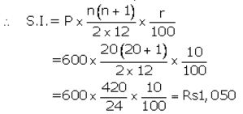
Question 2.
Mrs. Mathew opened a Recurring Deposit Account in a certain bank and deposited 640 per month for 4 ½ years. Find the maturity value of this account, if the bank pays interest at the rate of 12% per year.
Solution:
Installment per month(P) = 640
Number of months(n) = 54
Rate of interest(r)= 12% p.a.
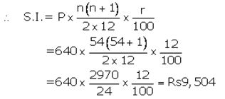
Question 3.
Each of A and B both opened recurring deposit accounts in a bank. If A deposited 1,200 per month for 3 years and B deposited 1,500 per month for 2 ½ years; find, on maturity, who will get more amount and by how much The rate of interest paid by the bank is 10% per annum.
Solution:
For A
Installment per month(P) = 1,200
Number of months(n) = 36
Rate of interest(r) = 10% p.a.
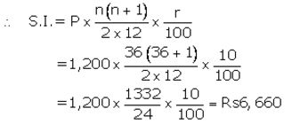
Question 4.
Ashish deposits a certain sum of money every month is a Recurring Deposit Account for a period of 12 months. If the bank pays interest at the rate of 11% p.a. and Ashish gets 12,715 as the maturity value of this account, what sum of money did money did he pay every month
Solution:
Let Installment per month(P) = y
Number of months(n) = 12
Rate of interest(r) = 11% p.a.
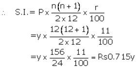
Question 5.
A man has a Recurring Deposit Account in a bank for 3 ½ years. If the rate of interest is 12% per annum and the man gets 10,206 on maturity, find the value of monthly instalments.
Solution:
Let Installment per month(P) = y
Number of months(n) = 42
Rate of interest(r) = 12% p.a.
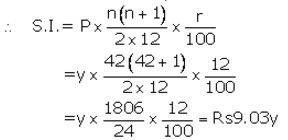
Question 6.
(i) Puneet has a Recurring Deposit Account in the Bank of Baroda and deposits 140 per month for 4 years. If he gets 8,092 on maturity, find the rate of interest given by the bank.
(ii) David opened a Recurring Deposit Account in a bank and deposited 300 per month for two years. If he received 7,725 at the time of maturity, find the rate of interest per annum.
Solution:
(a)
Installment per month(P) = 140
Number of months(n) = 48
Let rate of interest(r) = r% p.a.
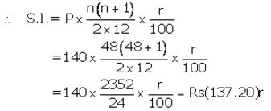
Question 7.
Amit deposited 150 per month in a bank for 8 months under the Recurring Deposit Scheme. What will be the maturity value of his deposits, if the rate of interest is 8% per annum and interest is calculated at the end of every month
Solution:
Installment per month(P) = 150
Number of months(n) = 8
Rate of interest(r) = 8% p.a.
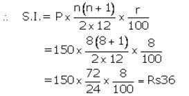
Question 8.
Mrs. Geeta deposited 350 per month in a bank for 1 year and 3 months under the Recurring Deposit Scheme. If the maturity value of her deposits is 5,565; find the rate of interest per annum.
Solution:
Installment per month(P) = 350
Number of months(n) = 15
Let rate of interest(r)= r% p.a.
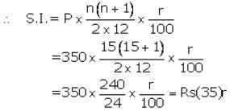
Question 9.
A recurring deposit account of 1,200 per month has a maturity value of 12,440. If the rate of interest is 8% and the interest is calculated at the end of every month; find the time (in months) of this Recurring Deposit Account.
Solution:
Installment per month(P) = 1,200
Number of months(n) = n
Let rate of interest(r) = 8% p.a.
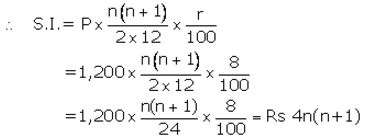
Question 10.
Mr. Gulati has a Recurring Deposit Account of 300 per month. If the rate of interest is 12% and the maturity value of this account is 8,100; find the time (in years) of this Recurring Deposit Account.
Solution:
Installment per month(P) = 300
Number of months(n) = n
Let rate of interest(r)= 12% p.a.
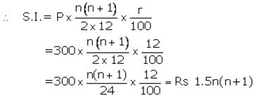
Question 11.
Mr. Gupta opened a recurring deposit account in a bank. He deposited 2,500 per month for two years. At the time of maturity he got 67,500. Find:
(i) the total interest earned by Mr. Gupta
(ii) the rate of interest per annum.
Solution:
(i)
Maturity value = 67,500
Money deposited = 2,500 × 24= 60,000
Then total interest earned = 67,500 – 60,000 = 7,500 Ans.
(ii)
Installment per month(P) = 2,500
Number of months(n) = 24
Let rate of interest(r)= r% p.a.
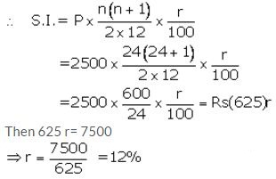
Question 1.
Pramod deposits 600 per month in a Recurring Deposit Account for 4 years. If the rate of interest is 8% per year; calculate the maturity value of his account.
Solution:
Installment per month(P) = 600
Number of months(n) = 48
Rate of interest(r)= 8% p.a.
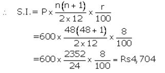
Question 2.
Ritu has a Recurring Deposit Account in a bank and deposits 80 per month for 18 months. Find the rate of interest paid by the bank if the maturity value of account is 1,554.
Solution:
Installment per month(P) = 80
Number of months(n) = 18
Let rate of interest(r) = r% p.a.
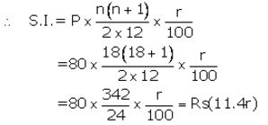
Question 3.
The maturity value of a R.D. Account is 16,176. If the monthly installment is 400 and the rate of interest is 8%; find the time (period) of this R.D Account.
Solution:
Installment per month(P) = 400
Number of months(n) = n
Let rate of interest(r)= 8% p.a.
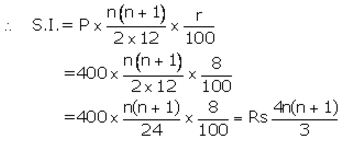
Question 4.
Mr. Bajaj needs 30,000 after 2 years. What least money (in multiple of 5) must he deposit every month in a recurring deposit account to get required money after 2 years, the rate of interest being 8% p.a.
Solution:
Let installment per month = P
Number of months(n) = 24
Rate of interest = 8% p.a.
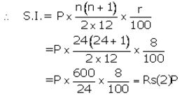
Question 5.
Rishabh has recurring deposit account in a post office for 3 years at 8% p.a. simple interest. If he gets 9,990 as interest at the time of maturity, find:
(i) The monthly installment.
(ii) The amount of maturity.
Solution:
Let Installment per month = P
Number of months(n) = 36
Rate of interest(r)= 8% p.a.
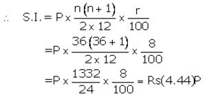
Question 6.
Gopal has a cumulative deposit account and deposits 900 per month for a period of 4 years he gets 52,020 at the time of maturity, find the rate of interest.
Solution:
Installment per month(P) = 900
Number of months(n) = 48
Let rate of interest(r)= r% p.a.
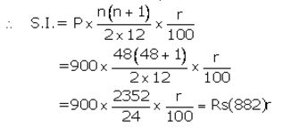
Question 7.
Deepa has a 4-year recurring deposit account in a bank and deposits 1,800 per month. If she gets 1,08,450 at the time of maturity, find the rate of interest.
Solution:
Installment per month(P) = 1,800
Number of months(n) = 48
Let rate of interest(r)= r% p.a.
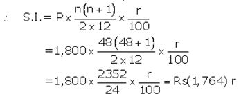